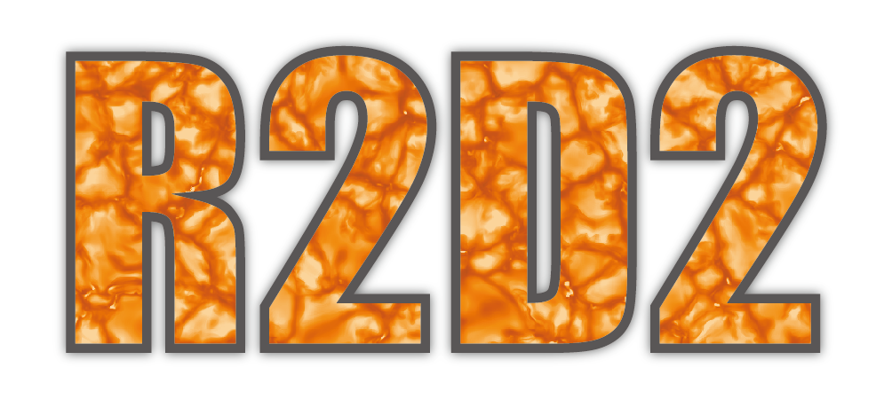

R2D2マニュアル¶
このページは太陽のための輻射磁気流体コードR2D2 (RSST and Radiation for Deep Dynamics) のマニュアルである。
R2D2では、輻射磁気流体力学の方程式を中央差分と非線形の人工粘性を用いて高精度かつ安定に解く。R2D2では、太陽表面付近では現実的に輻射輸送を解き、太陽深部では微小擾乱を正確に解く手法を取ることで、太陽内部から表面までを一貫して解くことができる。
{kind=link}
ライセンス¶
R2D2は公開ソフトウェアではなく、再配布も禁じている。 共同研究者のみが使って良いというルールになっており、R2D2の使用には、以下の規約を守る必要がある。
再配布しない
改変は許されるが、その時の実行結果について堀田は責任を持たない
R2D2で実行する計算は、堀田と議論する必要がある。パラメタ変更などの細かい変更には相談する必要はないが、新しいプロジェクトを開始するときはその都度相談すること。堀田自身のプロジェクト、堀田の指導学生のプロジェクトとの重複を避けるためである。
R2D2を用いた論文を出版するときは Hotta et al., 2019, Hotta and Iijima, 2020 を引用すること。
R2D2を用いた研究を発表するときは、R2D2のロゴ の使用が推奨される(強制ではない)。
{kind=link}
改訂履歴
出版論文¶
R2D2を用いた研究で出版された論文は以下です。
賞¶
索引と検索ページ¶
TODOリスト¶
課題
人工粘性
(元のエントリ は、 /Users/hotta/Library/CloudStorage/Dropbox/work/R2D2/R2D2-manual/artdif.rst の 4 行目です)
課題
コーディングルール
(元のエントリ は、 /Users/hotta/Library/CloudStorage/Dropbox/work/R2D2/R2D2-manual/code.rst の 6 行目です)
課題
コード構造
(元のエントリ は、 /Users/hotta/Library/CloudStorage/Dropbox/work/R2D2/R2D2-manual/code.rst の 10 行目です)
課題
輻射輸送の方程式
(元のエントリ は、 /Users/hotta/Library/CloudStorage/Dropbox/work/R2D2/R2D2-manual/equation.rst の 43 行目です)
課題
パラメータ。どのグローバル変数がどのモジュールで定義されているかを整理する。
(元のエントリ は、 /Users/hotta/Library/CloudStorage/Dropbox/work/R2D2/R2D2-manual/parameter.rst の 4 行目です)
課題
数値スキーム(時間積分)
(元のエントリ は、 /Users/hotta/Library/CloudStorage/Dropbox/work/R2D2/R2D2-manual/scheme.rst の 23 行目です)
課題
数値スキーム(輻射輸送)
(元のエントリ は、 /Users/hotta/Library/CloudStorage/Dropbox/work/R2D2/R2D2-manual/scheme.rst の 28 行目です)
課題
全対流層計算の設定例
(元のエントリ は、 /Users/hotta/Library/CloudStorage/Dropbox/work/R2D2/R2D2-manual/typical_case.rst の 331 行目です)
最終更新日：2023年11月30日